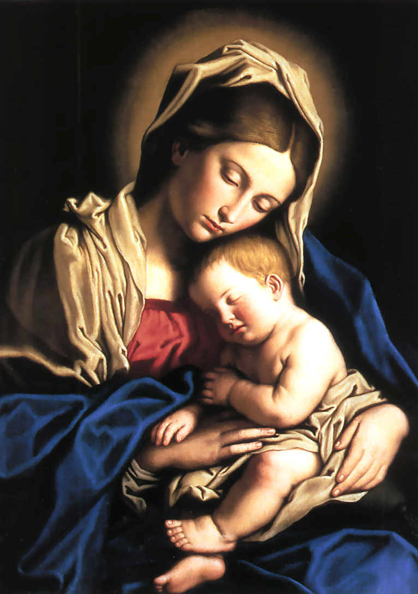

Um pouco sobre Raquel...
Ei, ainda não acabou viu. Tem um fato importante que tem que ser dito.
Conhecendo um pouco sobre Raquel com essa linda história, isso é tudo lindo, concordo! Mas tem
algo que não foi mencionando e foi a base de todas as conquistas, de sua família, amizades...
Foi também o que deu sustento as dores, magoas e os momentos mais difíceis. Será que você é
capaz de descobrir? Sim, todos esses momentos que foi mencionado e relembrados sobre Raquel, foi
graças, principalmente, pela sua fé e acreditar que ela estava em boas mãos, que são:

Maria nossa Mãe e Jesus seu filho nosso Deus